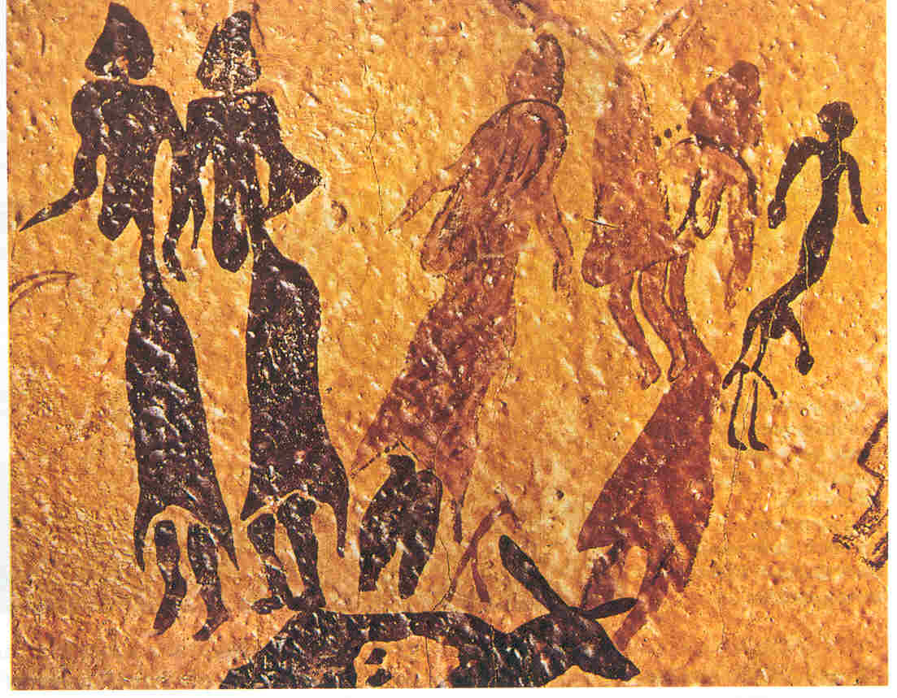

<HTML>
<HEAD>
  <!-- Created with AOLpress/2.0 -->
  <TITLE>periodo neolitico</TITLE>
</HEAD>
<BODY BACKGROUND="bgu.jpg">
<P ALIGN=Center>
<P ALIGN=Center>
<P ALIGN=Center>
<FONT COLOR="#0000ff"><BIG><BIG><BIG><BIG>La donna nel periodo
neolitico</BIG></BIG></BIG></BIG></FONT>
<P ALIGN=Center>
<P ALIGN=Center>
<P ALIGN=Justify>
<FONT COLOR="#000000">Secondo un&#146;opinione molto diffusa nel secolo scorso
le istituzioni erano caratterizzate da una dominanza delle donne: in altri
termini, la societ&agrave; era matriarcale. Questa fase sarebbe concisa con
il momento nel quale avvenne una modifica fondamentale nelle condizioni di
vita dell&#146;uomo, vale a dire il passaggio dalla vita nomade a quella
sedentaria con l&#146;introduzione dell&#146;agricoltura.</FONT>
<P ALIGN=Justify>
<FONT COLOR="#000000">Prima di quell&#146;epoca, la donna, contribuiva a
procurare il cibo raccogliendo bacche, frutti e radici.</FONT>
<P ALIGN=Justify>
<FONT COLOR="#000000">Solo agli inizi dell&#146;Olocene (11000 anni fa),
le donne, aiutate dai bambini, si dedicavano con sempre maggiore intensit&agrave;
all&#146;agricoltura, acquistando competenze e specializzazioni che gli uomini
non avevano e diventando le principali procuratrici di cibo. Via via che
nascevano nuove tecniche agricole esse conquistavano, di conseguenza, anche
il potere.</FONT>
<P ALIGN=Justify>
<FONT COLOR="#000000">Le istituzioni sociali e religiose registrarono un
cambiamento, segnato da una tendenza a trasformarsi in senso matriarcale.
Le divinit&agrave; femminili cominciarono a prendere sopravvento. Le donne
divennero le detentrici esclusive di poteri misteriosi, oltre a diventare
mogli. Il mondo conobbe un periodo in cui il potere fu delle donne. I
ritrovamenti di statuette preistoriche raffiguranti donne dai tratti sessuali
molto accentuati e la presenza di molti miti di epoca storica di divinit&agrave;
femminili creatrici hanno indotto l&#146;esistenza di riti di fertilit&agrave;
in cui le donne avessero ruoli speciali e addirittura di societ&agrave; in
cui le donne avrebbero goduto di un particolare prestigio. </FONT>
<P ALIGN=Center>
<FONT COLOR="#ffffff"></FONT>l
<P ALIGN=Center>
<FONT COLOR="#0000ff">Graffito rappresentante danzatrici neolitiche ( Cogul-
Spagna )</FONT>
<P ALIGN=Justify>
<FONT COLOR="#ffffff">Il matriarcato &egrave; la prima organizzazione sociale
dell&#146;umanit&agrave;, cio&egrave; una societ&agrave; dominata dalle donne,
detentrici del potere all&#146;interno della famiglia e della societ&agrave;
per il loro particolare rapporto con la fertilit&agrave; e la
riproduzione.</FONT>
<P ALIGN=Justify>
<FONT COLOR="#000000">Secondo le ipotesi matriarcali, questa fase di predominio
sociale della donna sarebbe stata un&#146;et&agrave; felice dove sarebbero
prevalsi valori non violenti: come la giustizia, l&#146;amore per i bambini
e la solidariet&agrave; verso i deboli.</FONT>
<P ALIGN=Justify>
<FONT COLOR="#000000">Ma un nuovo mutamento nelle condizioni di vita
determin&ograve; un&#146;ulteriore modifica nel rapporto fra i sessi. Lo
sviluppo dell&#146;agricoltura e del commercio port&ograve; ad avere bisogno
di un capo capace di difendere il villaggio e di organizzare la guerra: in
altre parole un capo maschio.</FONT>
<P ALIGN=Justify>
<FONT COLOR="#000000">La democrazia che caratterizzava la vita dei villaggi
protoagricoli matriarcali, cedette il passo a una societ&agrave; diseguale,
dove le donne, gradualmente ma inevitabilmente, persero il loro potere. Comunque,
l&#146;idea del matriarcato &egrave; peraltro importante perch&eacute; ha
messo in discussione la tesi di chi vede nel patriarcato l&#146;unica possibile
forma di organizzazione sociale.</FONT>
<P ALIGN=Justify>
<FONT COLOR="#000000"></FONT>
<P ALIGN=Center>
<FONT COLOR="#000000"></FONT>
<P ALIGN=Center>
<FONT COLOR="#000000"></FONT>
<P ALIGN=Center>
<FONT COLOR="#000000"></FONT>
<P ALIGN=Center>
<FONT COLOR="#000000"></FONT>
<P ALIGN=Center>
<FONT COLOR="#000000"></FONT>
<P ALIGN=Center>
<FONT COLOR="#000000"></FONT>
<P ALIGN=Center>
<P ALIGN=Center>
<A HREF="index.html"></A>
<A HREF="egizi.html"></A>

</BODY></HTML>